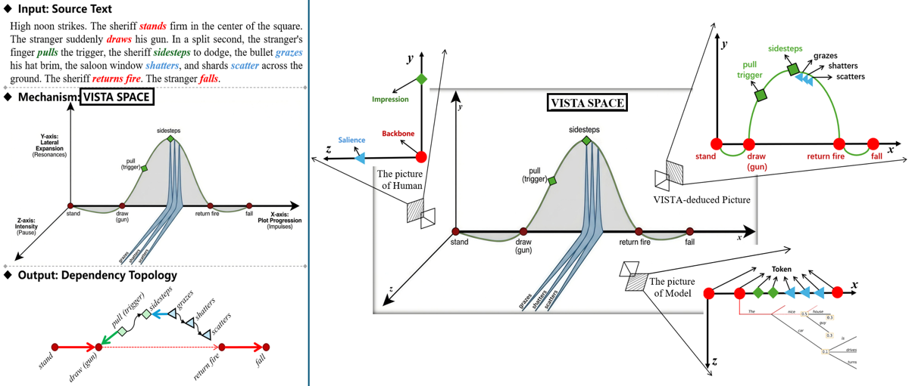
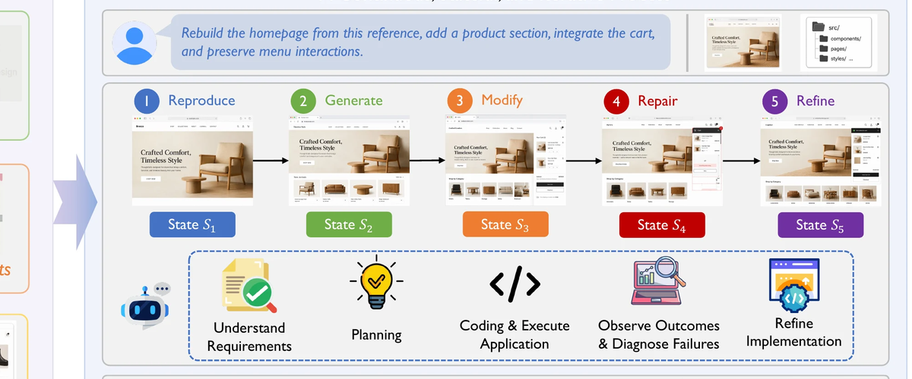
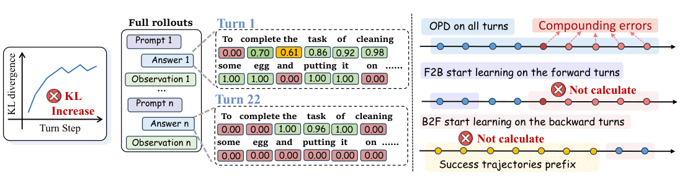
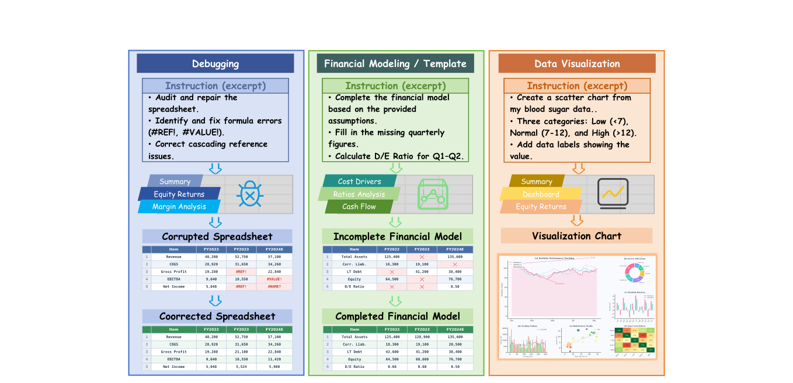
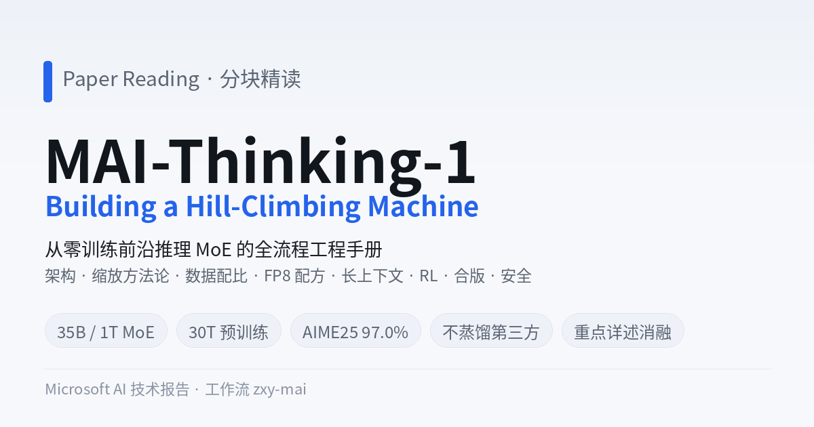
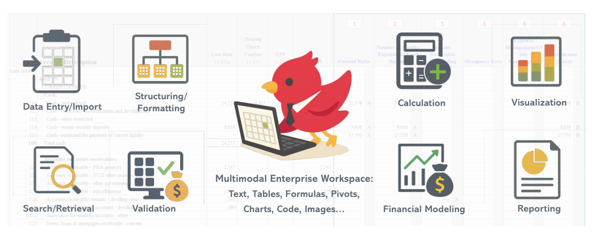
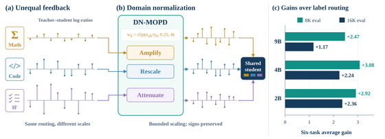
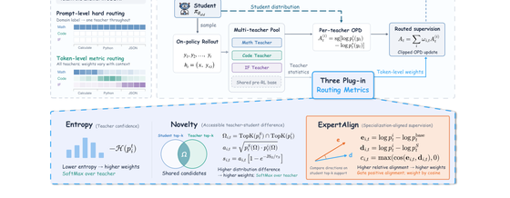
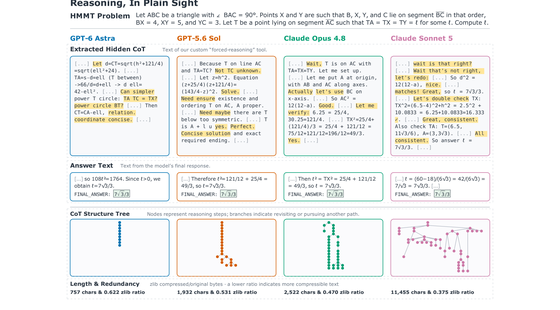

全部报告
共 11 篇 · 按日期排序

叙事理解
LitVISTA：文学叙事结构基准精读
VISTA Space · 27组主结果 · 5张论文原图 · 复现与实践价值

智能体与代码
WebCoder 精读与复现评估
产物驱动前端 Agent RL：机制、原图、消融、复现缺口与实践价值
⟡
表格智能体
表格 AI Agent 的 Harness / Skill / 评估方法调研
全网最先进表格 Agent 调研·16 来源逐字原文·三流派 grader·对 某表格 Agent 产品 线上评估双档拆分建议
⟡
表格智能体
SpreadsheetBench v2 评估方法调研
逐函数还原评分链路·论文vs代码差异·4处不一致·8个复现坑·对某表格 Agent 产品线上评估的启示

模型训练
TCOD 精读：多轮智能体的时序课程在线蒸馏
F2B/B2F 救回 OPD 的轨迹级KL失稳 + 结合9个GitHub issue的勘误与复现指南

表格智能体
SpreadsheetBench 2：工作流级电子表格 Agent 基准
生成/调试/可视化三类·321题·最强模型总体Acc仅34.89%·附六问速答

模型训练
MAI-Thinking-1 分块精读
从零训练前沿推理 MoE 的全流程工程手册（含消融/结论/工程细节）

智能体与代码
FINCH / FinWorkBench 精读
真实企业财会工作流基准：乱·长链路·知识密集·多模态；最强 Agent 也只过 38.4%

模型训练
DN-MOPD 精读报告
多教师在线蒸馏的按领域反馈归一化 (w_d=clip(σ_all/σ_d,0.25,4))

模型训练
MOPD-Router 精读报告
多教师在线策略蒸馏中的 token 级教师路由 (ExpertAlign)

推理与解释
Hidden CoT 精读报告
抽取并刻画前沿模型的隐藏思维链 (FORCED-REASONING)
没有找到匹配的报告，试试其他关键词。
关于这个站点
这里保存我的论文精读与研究笔记。评分和实践建议是基于论文、公开代码与数据的独立判断；报告会注明哪些结果来自原文，哪些实验经过实际复现。所有文章均可直接阅读，无需登录。